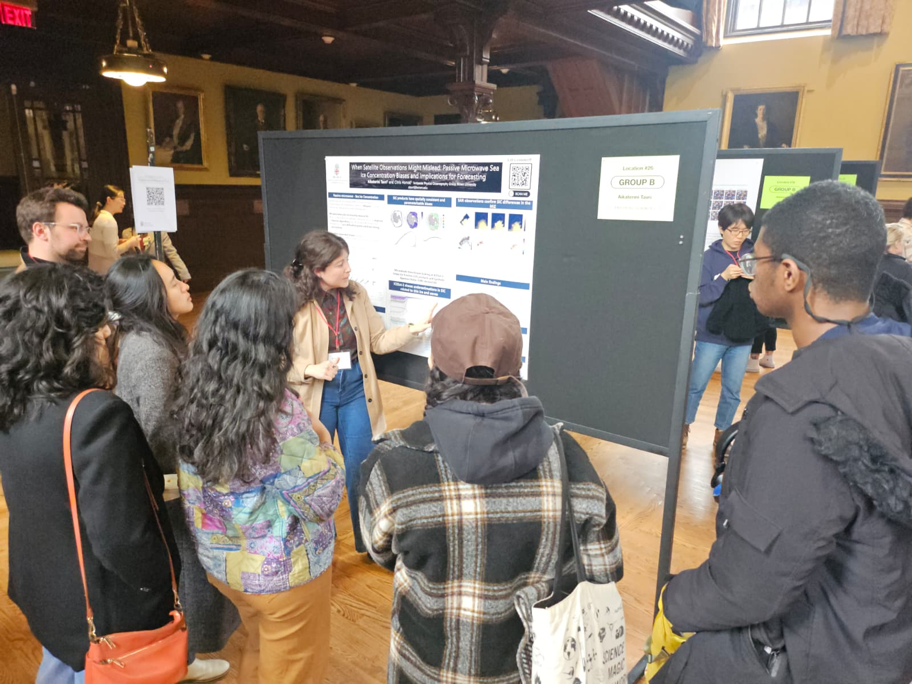
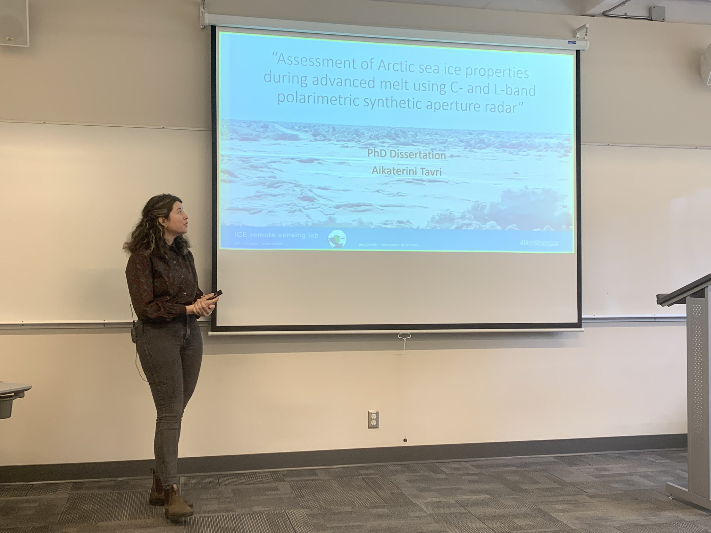
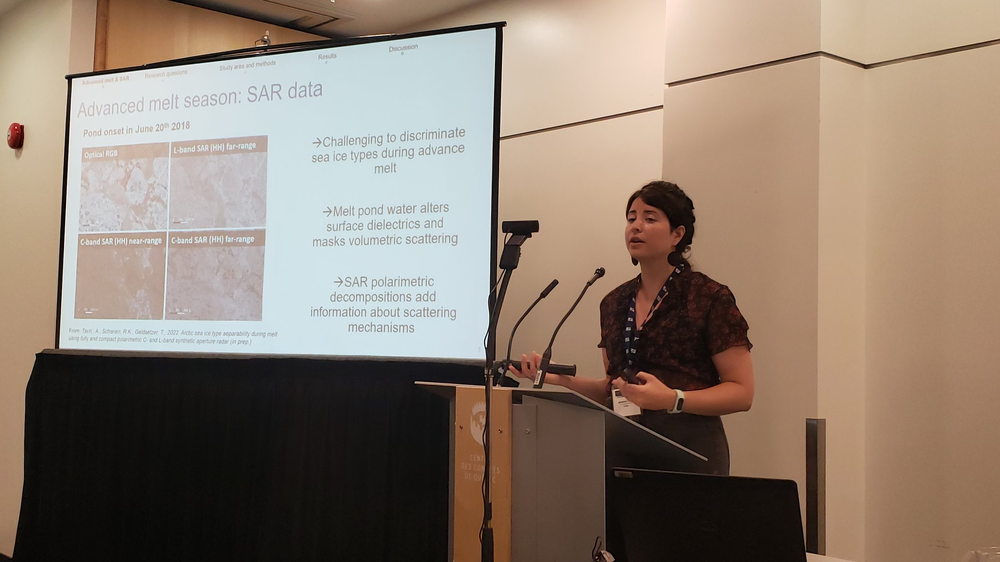

My teaching focuses on building confidence through hands-on learning, connecting physical concepts to real-world observations, and fostering inclusive environments where students from diverse backgrounds can engage with ocean and climate science.



My approach to teaching is shaped by my experience as a first-generation college student and as a researcher working across disciplines. I recognize that differences in academic preparation—particularly in quantitative skills—can influence how students engage with scientific material. As an instructor, I aim to create learning environments where students feel supported, challenged, and encouraged to develop confidence through practice, collaboration, and discovery.
I view teaching as an active process in which students learn best by working directly with data, observations, and real-world questions. In marine and environmental science, this means connecting classroom concepts to satellite observations, field measurements, and processes that students can relate to. My goal is to help students move from initial uncertainty to analytical independence.
Mentorship is a central component of my teaching. I work closely with students to set clear goals, establish milestones, and provide regular feedback as they develop independence in research and analysis. I emphasize transparent communication and normalize uncertainty as part of the scientific process, helping students build confidence and resilience.
I have mentored undergraduate and graduate students across interdisciplinary projects involving remote sensing, oceanography, and climate science. Many of these students have gone on to pursue graduate studies or research careers.
Selected lecture materials, datasets, and notebooks are available here: Lecture Materials.